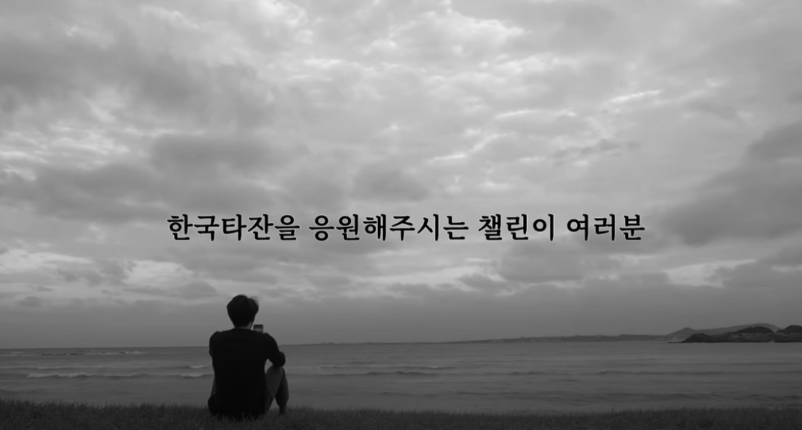
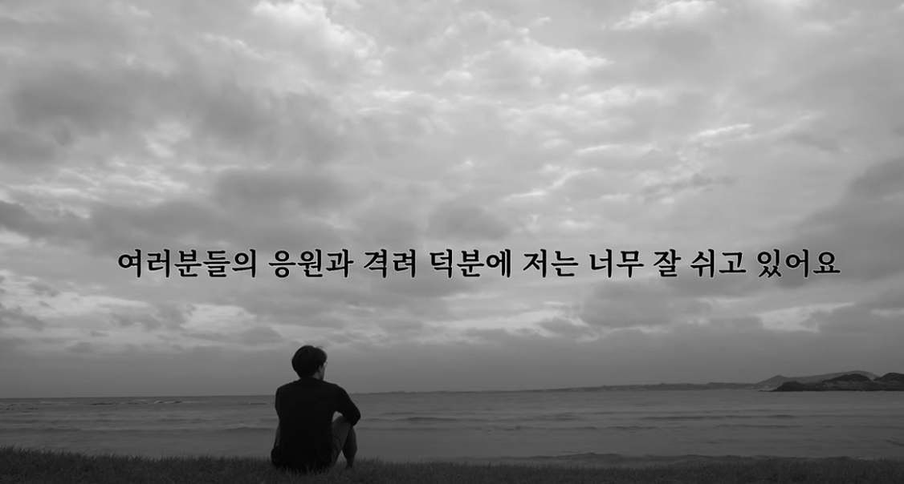

쉼이 필요할 때 용기를 내는 법
한동안 ‘퇴사하고 ~~에서 한 달 살기’가 유행처럼 번졌다. 처음에는 ‘제주에서 한 달 살기’로 시작해서 점점 해외로까지 뻗어나가더니 ‘다낭에서 한 달 살기’, ‘발리에서 한 달 살기’처럼 물가가 저렴한 관광지에서 한 달을 살다 오는 사람도 많아졌다. 오랫동안 일만 하며 고생한 자신에게 주는 보상 같은 개념이었다. 그런 사람들을 보며 한 달 살기의 매력이 무엇일지 궁금했는데, 나에게도 느닷없이 기회가 주어졌다.
2019년 대학교 4학년이 된 나는 1학기를 끝내고 두 번째 휴학을 결정했다. 취업을 하려니 준비가 덜 된 것 같았고, 무슨 일을 하고 싶은지 정하지도 못했다. 길을 잃은 듯한 상황에서 진짜 내 길을 찾아보겠다고 호기롭게 휴학을 결심했지만, 막상 여유가 생기자 효율적으로 시간을 쓰지도 못했다. 대책 없이 그저 나에게 주어진 시간을 대충 때우고 있었다. 그러다 보니 점점 삶이 무기력해졌다. 뭔가 돌파구가 필요했다.
그러다 하루는 넷플릭스에서 〈리틀 포레스트〉라는 영화를 보게 되었다. 김태리가 맡은 주인공 ‘혜원’은 나와 정말 비슷했다. 학업, 연애, 취업…… 뭐 하나 제대로 되는 게 없는 막막하기만 한 상황. 그러다 무작정 고향으로 돌아가 시골 소녀로 살게 되었다.
나도 도망가고 싶었다. 고향이든 어디든 아무도 나를 아는 사람이 없는 시골에서 텃밭에 있는 방울토마토나 따 먹으면서 지내면 얼마나 편하고 좋을까. 잠시라도 나에게 쉼을 주고 싶었다. 그렇다면 한 달 살기를 해볼까?
‘어차피 지난 한 달 동안 아무것도 제대로 안 했잖아? 그럴 바에는 집구석에 처박혀 있는 것보다 어디 가서 힐링이라도 하고 오는 게 낫지. 몰라 뭐, 어떻게든 되겠지. 가자!’
꽂혔으니 일단 시작해야 했다. 해외로 가기에는 자금이 부족해 제주도를 찾아보니 한 달 동안 머물 만한 숙소가 꽤 많았다. 숙소의 기준은 무조건 구석에 있어서 시내로 나오기 힘든 곳이어야 했다. 이왕이면 서울에서는 어려운 슬로우 라이프를 즐기고 싶었다. 결국 제주도 동남부에 위치한 ‘표선’이라는 마을에 있는 작은 펜션에 가기로 결정했다. 통장에는 딱 숙소비와 항공권값, 한 달 생활비만 남아 있었다.
✔ 목표: 제주도에서 한 달 동안 살아본다.

걱정과 근심을 벗어버리는 슬로우 라이프
자체 휴가에 대한 설렘으로 가득할 것이라는 기대와는 달리 마음이 불안했다. 친구들은 하나같이 취업 준비에 모든 것을 다 쏟아붓고 있는데 내가 너무 섣부르게 판단한 건 아닐까? 비행기표를 취소할까? 하는 생각도 들었지만 저가 항공 프로모션으로 예약한 탓에 취소는 불가능했다(저가 항공으로 예약하길 천만다행이었다).
그렇게 무거운 마음으로 제주행 비행기에 올랐다. 살면서 혼자 비행기를 타는 일은 처음이었다. 나의 혼란스러운 마음과는 대조적으로 기내는 평화로웠다. 기내의 백색소음을 들으며 창밖 하늘을 보니 ‘쉬러 온 너를 환영해’라고 속삭여주는 것 같았다. 비행기에 타기 전보다는 마음이 가라앉았지만, 여전히 싱숭생숭해서 아무 계획도 세우지 못한 채 제주도에 도착했다.
예산 문제로 차를 렌트하지 못해 숙소에 들어가는 것부터 난관이었다. 공항에서부터 제주도 외곽을 따라 도는 시외버스를 타고 가다가 숙소와 가까운 동네에 내려 배차 간격이 한 시간이나 되는 버스로 갈아타고 더 들어가야 했다. 버스를 갈아탈 때는 7시를 갓 넘긴 시각이었지만, 이미 하늘이 어둑어둑해서 똑바로 정신 차리지 않으면 로드킬이라도 당할 것 같았다.
‘나 여기에서 한 달 동안 살아도 정말 괜찮은 걸까?’
그렇게 우여곡절 끝에 한 달 살기의 첫날이 저물어가고 있었다.
다음 날, 큰맘 먹고 온 제주도인데 걱정만 늘어놓다 갈 수는 없다는 생각이 들었다. 나는 마인드컨트롤을 시작했다.
‘나는 휴식이 필요해 제주도로 떠나왔고 서울에 있어봤자 변하는 건 없다. 한 달 정도 쉰다고 내 인생이 나락으로 떨어지지 않는다. 2보 전진을 위한 1보 후퇴라고 생각하자.’
마음을 고쳐먹고 일단 하루 동안만 아무것도 하지 않기로 했다. 친구들이랑 연락도 끊고 소셜미디어도 안 하고 영상도 찍지 않고 모든 일에서 벗어나 보기로 했다. 심지어 유튜브조차 쳐다보지 않았다.
그날은 숙소 밖으로 나가 맑은 공기를 마시고 근처 귤밭을 둘러보고 버스정류장에 멍하니 앉아 버스가 몇 대나 지나가는지 셌다. 배가 고프면 장 본 것들로 대충 밥을 해서 먹고 펜션 사장님과 잠시 이야기도 나누었다. 얼마 전에 구매한 드론도 날려보았다. 그러다 보니 하루가 금세 지나갔다. 그리고……
아무 일도 일어나지 않았다.
딱히 뒤처진다는 느낌이 들지도 않았고 오히려 지금이 아니면 평생 이런 시간을 가질 수 없겠다는 생각이 들었다. 어렵사리 제주도로 떠나와 놓곤 하루가 지나서야 겨우 마음의 여유를 찾았다. 틀을 깬 하루를 보내고 나니 드디어 제대로 ‘쉴’ 수 있게 되었다.
남은 29일 동안은 그저 마음이 내키는 대로 살았다. 배고프면 먹고, 피곤하면 자고, 싸고 싶으면 싸고……. 남아도는 시간에 뭐라도 해볼까 싶어 저렴한 기타도 하나 주문했다. 제주도라 오래 걸릴 줄 알았는데, 놀랍게도 결제한 다음 날 바로 도착했다. 제주도에 오지 않았으면 기타를 다시 잡을 일은 없었을 것이다. 진짜 베짱이가 된 기분이었다.
당시 유튜브가 막 성장하고 있던 중이라 영상을 올리지 않으면 구독자를 놓칠까 불안했지만, 억지로 무언가를 찍고 싶진 않았다. 한 달간의 기록을 남기기 위해 바리바리 챙겨 간 카메라 장비는 거의 꺼내지도 않았다. 글로 기록을 남기는 것도 썩 내키지 않아 하지 않기로 했다. 습관적으로 들여다보던 메일함과 소셜미디어와도 잠시 거리를 두었다.

어렵사리 제주도로 떠나와 놓곤 하루가 지나서야
겨우 마음의 여유를 찾았다.

틀을 깬 하루를 보내고 나니
드디어 제대로 ‘쉴’ 수 있게 되었다.
걱정과 근심은 벗어버리고 원하던 대로 슬로우 라이프를 마음껏 즐겼다. 잠에서 깨면 밖으로 나가 상쾌한 산 공기를 들이마시고 매일매일 다른 모습으로 스며드는 햇볕을 만끽했다. 숙소 근처 오름을 오르는 날도 있었고, 예쁜 카페에 앉아 아무 생각하지 않고 몇 시간을 보낸 날도 있었다. 버스를 타고 시내로 나갔다가 두 시간을 걸어 돌아오기도 했다. 비가 온 날은 숙소 테라스에서 떨어지는 빗소리를 음악 삼아 아무 데도 나가지 않고 하루를 꼬박 보냈다.
그렇게 하루가 지나고 일주일이 지나고 한 달이 지났다. 처음 제주도로 떠나올 때의 걱정과는 달리 나에게는 아무 일도 일어나지 않았다.

인생의 추진력을 얻기 위해 쉬어 가기
인생과 자동차의 공통점이 뭘까? 여러 가지가 있겠지만, 나는 엑셀 옆에 브레이크도 나란히 놓여 있다는 점을 들고 싶다. 그런데 나를 포함한 많은 사람이 마치 인생에 엑셀만 있다는 듯 브레이크는 밟지도 않고 달려간다. 더 좋은 학점을 위해, 더 좋은 곳에 취업하기 위해 쉼 없이 속도를 높인다. 브레이크가 없는 자동차는 존재할 수가 없다. 인생도 마찬가지다. 잠시 브레이크를 밟고 좌우를 살피지 않으면 어느 순간 빠른 속도에 잡아먹혀 나와 주변을 돌아보지 못한 채 중요한 것을 놓칠지 모른다.
나는 어떤 일을 할 때 가장 행복할까?
어떤 일들이 나를 힘들게 하고 스트레스를 줄까?
내가 힘들 때 의지할 수 있는 사람은 누구일까?
나를 믿어주고 응원해주는 사람들에게 그동안 소홀하진 않았나?
일과 사람으로부터 떠나 혼자만의 시간을 갖게 되니 그제야 스스로에게 이런 질문들을 던질 수 있었다. 질문에 대한 해답을 조금씩 찾아가면서 앞으로 내가 걸어가야 할 길이 희미하게나마 보였다.
그보다 더 좋았던 점은 새롭게 시작할 수 있는 에너지를 한껏 얻었다는 것이었다. 자연 속에서 좋은 풍경을 보고 맑은 공기를 마시면서 내 몸에 좋은 기운을 가득 채워 넣었다. 어느 때보다 활력이 넘쳤고 나에게 어떤 일이 주어지더라도 긍정적인 에너지로 해낼 수 있을 것 같았다. 앞으로 이런 여유가 없더라도 상관없다. 쉬어가는 방법을 깨달았기 때문에 이제는 하루를 쉬더라도 나를 온전히 내려놓을 수 있을 것이다. 〈리틀 포레스트〉의 혜원은 배가 고파 고향으로 돌아왔다고 말한다. 우리도 그동안 바쁜 일상에서 오랫동안 나도 모르게 움트고 있던 심리적 허기를 채 느끼지도 못한 채 달리기만 했던 것은 아닐까? 고픈 배를 제대로 채워주지 못하면 언젠가는 탈이 나고 만다. 영양실조로 쓰러져 다시 일어날 힘조차 없어질지 모른다.
나는 다시 서울로 돌아왔고, 세상은 여전히 바쁘게 돌아갔고, 다시 내게 주어진 일과 마주하게 되었다. 하지만 더 이상 불안하지 않았다. 나는 내 마음속 허기를 느끼고 다시금 달리기 위해 에너지를 채워 넣었다. 그리고 언제든 지치면 쉬어갈 수 있는 용기도 덤으로 얻었다. 2019년 가을, 한 달간 제주도에서 힘을 얻은 나는 지금까지 멈추지 않고 달리고 있다.